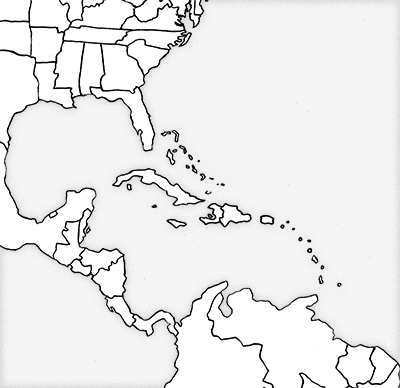

/ Blog / Summer!
Howdy folks!
Another two months, another chuck full of a wide variety of projects. Life's good when it's busy.

Does Cartographic fashion exist?
Yep! Though, that fashion depends more on the tools than a communities whim to put floral patterns on everything. Still, in a mostly-facetious conversation about Cartographic fashion, I decided that I needed to make a plaid map. ...and here's the product of that.

For those interested, the choropleth is based off of which states have > 500 jobs in the logging industry.

A major project I've been building of late is a framework for AgResource. Basically, they're running all over the Midwest taking pictures of farmers crops, and wanted to have an interactive map which the users can both check out where the farms are and the pictures as the season progresses.
This project was a lot of fun, and a great way to work on some hefty manipulation of Leaflet icons.

It hasn't been published yet, we're waiting on a few more adjustments, but look forward to a process post when it does. Here's a working version of what the framework looks like. The images are all placeholders, as that's something AgResource will be providing.

As a follow-up to the work I'd been doing with AgResource, I was curious seeing how far I could push icons drawn with Leaflet. Essentially, I wanted to test 1. How many icons could be drawn on a screen before the user would start to get a significant amount of lag? and 2. Can those icons just be drawings as opposed to svg circles?
Decided to test both things (and GeoJson manipulation within the script) with this goofy thing- Click a Cat, Get a Cat.
My good friend Daniel Huffman of SomethingAboutMaps started a project a few years ago called Project Linework. The general idea is: there are tons of fonts out there, because they can all say different things. A letter written in comic sans comes off different than one written in Times New Roman. So, considering all maps are already abstractions, why not have some varieties out there for geographies? If you look at older newspapers or books, there are some wonderfully inaccurate maps out there- but the geographic discrepancies aren't always at the expense of what the map is trying to show.
So, Daniel brought me aboard to do a detailed hand-drawn geography of the world. So far Project Linework only has graphics for the United States. Here, we're doing the entire world.

General method was to print out Natural Earth Data (industry default vector linework of the world's geographies) and do some tracing of the countries borders. So, for example, just tracing the tip of Africa and where it extends to are- then going in and freehanding the lines in between. This introduces enough error to make the lines look drawn, but not to the point of it being unusable.
Here's some examples of it!



We're currently working on digitizing it up, hopefully it'll be up by the next blog post!


Finally, my band Gallant Ghost finally released our EP! It was a lot of work, but the good kind. Listen and enjoy while also enjoying a couple more posters I'd drawn up for some of our shows.